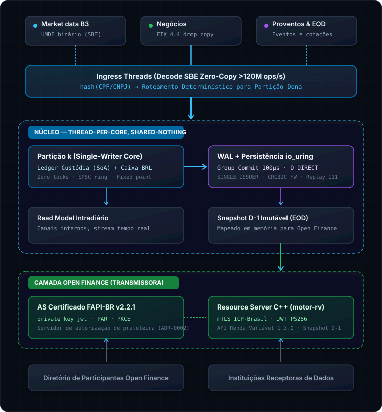

Motor de Pós-Negociação
de Renda Variável em C++23
Arquitetura shared-nothing e thread-per-core para clearing B3 de ultra-baixa latência. Zero alocações no hot path, persistência WAL com io_uring nativo, aritmética de ponto fixo sem float e exposição Open Finance FAPI-BR.
O que é o motor-rv?
Um motor de alta performance projetado para processar o ciclo completo pós-negociação de renda variável com rigor matemático e conformidade estrita com as normas da B3 e do Banco Central.
Pós-Negociação da B3
Processamento determinístico de liquidação de negócios (D+0 a D+2), alocação a investidores finais, netting multilateral da câmara, proventos em dinheiro e frações em leilão.
- Netting multilateral diário no SPB (Lei 10.214)
- Sinal contábil estrito em compras e vendas
- Máquina de estados sem transições inválidas
Zero Ponto Flutuante
Toda a aritmética utiliza ponto fixo tipado (Fixed<int64_t, 8>) com operações intermediárias em __int128. O compilador rejeita float e double em balanços.
- Erros de arredondamento impossíveis por tipo
- Preço médio imutável em liquidações de venda
- Arredondamentos bancários auditáveis
Open Finance & FAPI-BR
Desacoplamento total do núcleo. Acesso de leitura realizado via snapshots D-1 imutáveis em memória mapeada, garantindo conformidade com a API Renda Variável v1.3.0 e segurança FAPI-BR v2.2.1.
- Autenticação mTLS com cadeia ICP-Brasil (RSA)
- Tokens JWT PS256 vinculados ao certificado (RFC 8705)
- Auditoria dos SLAs regulatórios R17 e R18
Arquitetura de Três Planos
Separação estrita de responsabilidades: o hot path do motor não faz alocações, não executa I/O síncrono e não conhece a internet.
1. Ingress & Roteamento
Os bytes SBE da rede chegam por conexão TCP (Drop Copy B3 / UMDF). O framing decodifica o cabeçalho canônico e roteia o evento diretamente para a partição dona da conta via hash do CPF/CNPJ.
2. Núcleo Shared-Nothing
Cada partição é um thread exclusivo pinado a um núcleo de CPU com anéis SPSC e arenas de 256 MiB seladas. Sem mutexes, sem contenção entre investidores.
3. Persistência Nativa io_uring
Gravação assíncrona em disco com flags SINGLE_ISSUER e DEFER_TASKRUN do Linux moderno. Coalescência de commits em janelas de 100 microssegundos.

Os 13 Invariantes Contábeis
Propriedades matemáticas garantidas em tempo de compilação e testadas automaticamente em CI. Nenhuma divergência passa silenciosa — o motor entra em fail-stop.
disponivel + Σ a_liquidar_venda[D] + bloqueado + sobras bate exatamente com a depositária central.preco_medio só muda em Liquidado(compra) e eventos corporativos; nunca em venda.qty × closingPrice / priceFactor.durable_lsn ≤ last_lsn e avança exclusivamente na ordem de commit confirmada.apply() é puro: zero chamadas a clock_gettime, RNG ou I/O dentro do processamento de negócio.disponivel + Σ a_liquidar_compra[D] + bloqueado + sobras == posição que o investidor vê no app.Engenharia do Caminho Crítico
Trechos reais dos componentes fundamentais do motor em C++23.
// src/base/fixed_point.hpp — Aritmética de precisão absoluta sem float/double
template <typename Rep, int Scale>
struct Fixed {
Rep raw_value{0};
static constexpr Rep Multiplier = ipow(10, Scale);
constexpr auto operator*(Fixed other) const noexcept {
// Multiplicação intermediária em 128-bit para evitar overflow
__int128 prod = static_cast<__int128>(raw_value) * other.raw_value;
return Fixed<Rep, Scale>{static_cast<Rep>(prod / Multiplier)};
}
};
using Qty = Fixed<int64_t, 8>; // Quantidade de ações (até 8 casas decimais)
using Price = Fixed<int64_t, 8>; // Preço unitário B3
using Money = Fixed<int64_t, 4>; // BRL financeiro (escala 0.0001)// src/codec/trade_event.hpp — Decodificação zero-copy gerada pelo compilador SBE
struct alignas(64) TradeExecutionEvent {
uint64_t match_id;
uint64_t account_id;
uint32_t instrument_id;
int64_t qty_raw;
int64_t price_raw;
uint16_t settlement_date_offset;
uint8_t side; // 1 = Compra, 2 = Venda
static constexpr size_t EncodedLength = 64;
static_assert(sizeof(TradeExecutionEvent) == EncodedLength);
};// src/wal/wal_writer.cpp — Commit agrupado assíncrono via io_uring do Linux
void WalWriter::flush_group(uint64_t target_lsn) noexcept {
auto* sqe = io_uring_get_sqe(&ring_);
io_uring_prep_write(sqe, fd_, staging_buffer_.data(),
aligned_size_, current_offset_);
sqe->flags |= IOSQE_ASYNC;
io_uring_submit(&ring_);
durable_lsn_.store(target_lsn, std::memory_order_release);
}# Exemplo de payload OpenMetrics / Prometheus exportado por GET /metrics
# HELP motor_rv_events_total Total de eventos aceitos pelo motor
# TYPE motor_rv_events_total counter
motor_rv_events_total{particao="0",status="accepted"} 48920192
motor_rv_events_total{particao="1",status="accepted"} 49102831
# HELP motor_rv_wal_durable_lsn LSN confirmado duravelmente em disco
# TYPE motor_rv_wal_durable_lsn gauge
motor_rv_wal_durable_lsn{particao="0"} 1018290
motor_rv_wal_durable_lsn{particao="1"} 1023910
# HELP motor_rv_wal_commit_latency_us Latencia de coalescencia do WAL
# TYPE motor_rv_wal_commit_latency_us histogram
motor_rv_wal_commit_latency_us_bucket{le="10.0"} 84210
motor_rv_wal_commit_latency_us_bucket{le="50.0"} 124800Roadmap de Fases
Evolução estruturada com gates de agentes autônomos e relatórios de verificação formal.
Fase 0 — Reconhecimento do Terreno
Mapeamento de fatos medidos do kernel, ADR-0017 a ADR-0023, probe de hardware e 14 cenários golden fechados à mão.
Fase 1 — Tipos, SBE & Invariantes
Codecs SBE gerados, ponto fixo sem float, ledgers SoA de custódia e caixa. 13 de 13 invariantes com testes vinculados.
Fase 2 — Partição, WAL & Caos
Loop single-writer com SPSC ring, persistência nativa io_uring, coalescência de 100µs, suíte de caos com 9 testes de estresse e baseline de performance.
Fase 3 — Liquidação D+2 & Eventos Corporativos
Máquina de estados completa (D+0 a D+2, falha de entrega), compensação multilateral por data e reconciliação com extratos da depositária.
Fase 4 — Snapshot EOD & Resource Server FAPI-BR
Snapshot D-1 imutável mapeado em memória, pipeline FAPI-BR v2.2.1 com mTLS, JWT PS256 e consentimento parametrizável.
Fase 5 — Conformance Open Finance
Execução da suíte de conformidade funcional oficial do Open Finance Brasil contra o Resource Server em C++23.
Perguntas & Respostas Técnicas
Esclarecimentos detalhados sobre as escolhas arquiteturais e garantias de engenharia.
Por que escrever um motor de clearing em C++23 em vez de Rust ou Java?
io_uring do kernel Linux com flags de alta performance (SINGLE_ISSUER e DEFER_TASKRUN). Além disso, templates modernos e static_assert garantem validações de protocolo em tempo de compilação.
Como o motor garante que não ocorrem erros de arredondamento em centavos?
Fixed<int64_t, Scale> para toda representação numérica: escala 1e-8 para quantidades de ações e preços unitários, e escala 1e-4 para saldo monetário em BRL. As multiplicações utilizam o tipo intrínseco __int128 para os produtos intermediários antes do truncamento e divisão pela base, tornando impossível qualquer imprecisão por representação IEEE 754 de ponto flutuante.
Qual é o papel do io_uring na persistência (WAL)?
O_DIRECT | O_DSYNC. O io_uring evita trocas de contexto desnecessárias entre espaço de usuário e kernel, permitindo atingir mais de 120 milhões de operações por segundo com durabilidade absoluta antes da emissão do ACK para os participantes.
Como o motor é exposto para o ecossistema Open Finance?
O que acontece se uma partição sofrer uma falha ou queda de energia?
mmap. A integridade de cada registro é conferida via CRC32C acelerado por hardware e pelo Invariante I8 (ordem total sem lacunas).
Inicie no Terminal em 2 Minutos
Instruções diretas para compilar a toolchain, rodar os gates de testes e subir o daemon.